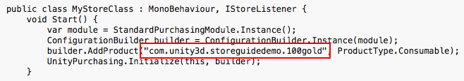

本指南介绍如何建立 Unity 游戏与应用内购 (IAP) 商店进行交互所需的数字记录和关系。本指南针对的是 Unity IAP 购买 API。
应用内购 (IAP) 是通过资金交易购买数字商品的过程。一个平台的应用商店会允许购买代表数字商品的产品。这些商品有一个标识符（通常是字符串数据类型）。商品的类型 (Types) 可表示其耐用性：_订阅、消耗品_（可以多次购买）以及_非消耗品_（可以购买一次）是最常见的类型。
Windows 应用程序开发可提供本地和远程 Windows 应用商店客户端/服务器 IAP 测试。
本页面介绍使用模拟器和模拟计费系统进行的本地测试，然后说明 Windows 应用商店测试（此测试将应用程序发布可见性限制到具有应用程序链接的用户）。
注意：本指南面向 Windows 10 Universal SDK。其他 Windows 目标也有相应的指南。
注意：Unity 5.6 以上的版本支持 IL2CPP Windows 编译项目。在装有早期 Unity 版本的 Windows 上对 IL2CPP 使用 Unity IAP 会生成编译错误。
1.编写一个游戏并实现 Unity IAP。请参阅 Unity IAP 初始化和将 Unity IAP 与您的游戏集成。
1.准备好游戏的商品标识符，以便稍后在 Microsoft 的 Windows 开发人员中心控制面板中用于执行远程 Windows 应用商店测试。

Microsoft 提供了一个模拟计费系统，允许在本地测试 IAP。这样一来，无需在 Windows 开发人员中心内配置任何内容或通过应用程序与 Windows 应用商店进行通信，即可执行初始集成测试。
配置本地测试比配置远程商店测试要简单得多，不过需要对应用程序进行临时的代码更改，而且测试完成之后在应用程序发布前需要删除这些更改。
要在本地测试 IAP：
1.在使用 ConfigurationBuilder 实例对 Unity IAP 进行初始化的代码中启用模拟计费系统。
**警告**：在测试后发布到应用商店之前，请删除这些代码更改；否则应用程序将不会通过 IAP 交易任何真实资金！

2.在 Unity 中将应用程序发布到__通用 Windows 平台__。
3.在 Visual Studio 中打开该应用程序，并运行适用于 x86 的本地计算机目标。
4.测试 IAP。
5.从代码中删除模拟计费系统。
一旦在本地测试了基本的 IAP 功能，您就可以更加自信地开始使用 Windows 应用商店。此测试可确认该应用程序已正确注册所有必要的 IAP 以允许购买。
为了测试 IAP 和发布，请使用 Windows 开发人员中心，并为应用程序配置有限的可见性。这样可以将应用程序的可见性限制为拥有应用程序直接链接的用户。
注意：在应用商店中进行测试还需要认证，这可能成为测试的障碍。因此，在开始使用 Windows 应用商店进行测试之前，完成本地测试非常重要。
1.在开发人员中心内创建新的应用程序。

2.保留好应用程序名称。

3.要使用 Windows 应用商店来测试 IAP，Windows 开发人员中心要求发布该应用程序。单击 Pricing and availability 并限制应用程序在应用商店内的可见性，使该应用程序仅供拥有应用程序直接链接的用户使用。

4.在 “Distribution and visibility” 中查看应用商店提供的发布行为的列表。选择 Hide this app in the Store。

5.保存好直接链接。此链接将用于在 Windows 10 设备上安装应用程序以便进行测试。

6.提交应用程序以供认证。
提交过程可能需要几个小时才能完成，并且 Microsoft 认证团队可能会提出一些屏蔽问题，您需要问答这些问题才能成功提交。
添加每个 IAP，将价格设置为 “free” 以便在测试期间不进行资金交易。测试完成后，将 IAP 重新配置为所需价格并重新发布。请参阅 IAP 提交 (IAP Submissions)。
1.在新应用程序的 “App overview” 页面中，单击 Create a new IAP。

2.输入商品 ID。

3.配置类型、价格和语言。
**注意**：对于 **Pricing and availability**，出于测试目的请选择 **free**，以免产生不必要的费用。完成测试后，在准备向公众发布之前，请以所需价格更新并重新提交每个 IAP。

选择 **Properties** 以设置类型。

选择 **Pricing and availability** 以设置价格，并选择 **Free**（原因如上文所述）。

选择 **Manage languages** 并声明所支持的语言。

返回到 IAP 概览时选择所声明的语言。

填写 Title、Description 和 Icon。

4.提交 IAP 以供认证。
与应用程序一样，IAP 提交过程可能需要几个小时才能完成，并且 Microsoft 认证团队可能会提出一些屏蔽问题，您需要问答这些问题才能成功提交。

以下步骤遵循 Windows 应用商店支持的 Beta 测试过程的一个分支。这涉及限制应用程序本身的可见性，禁止公众通过 “Search Store” 功能发现该应用程序。请参阅 Windows 开发人员中心有关 Beta 测试和定向分发的资源以了解更多信息。
1.确认应用程序和 IAP 均已完成认证。
2.通过前面生成的直接链接在 Windows 10 设备上安装应用程序。
3.测试 IAP。
4.通过测试后，以所需的公开定价更新 IAP，更新应用程序可见性设置以便共享给公众，然后提交这两种更改以供最终认证。
• 2017–05–16 页面已修订